공주목 · 공간 도면 모음
웹에 연결된 Blender 공간의 배치도와 전경입니다. 계절 장면은 같은 배치를 사용하며, 현재 공간은 사진을 참고한 모델입니다.
카메라 테스트 · 확장 공간
유물 반측면 고정 → 등 무늬 확대 → 마을 → 인물 1~5 → 객사터 석사자 → 3초 정지 → 시대·계절 변화 60초 → 페이드아웃. 기존 건물의 형태와 크기를 유지하며 민가 19채와 나무 38그루를 추가했습니다. 북쪽 담장에 순환 동선을 위한 통로를 마련했습니다.
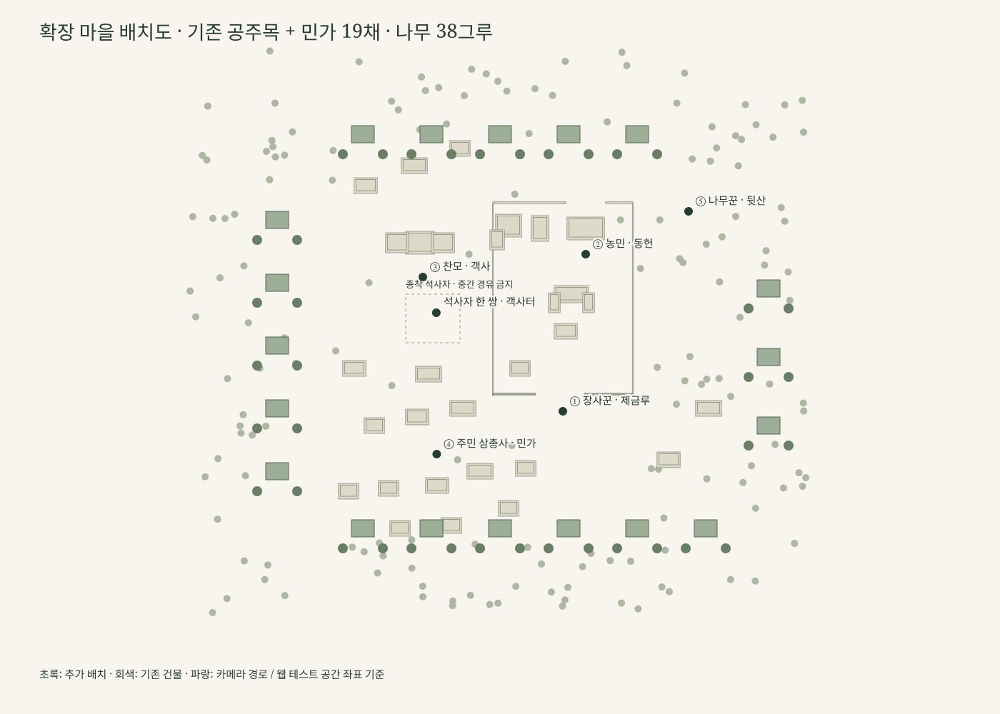
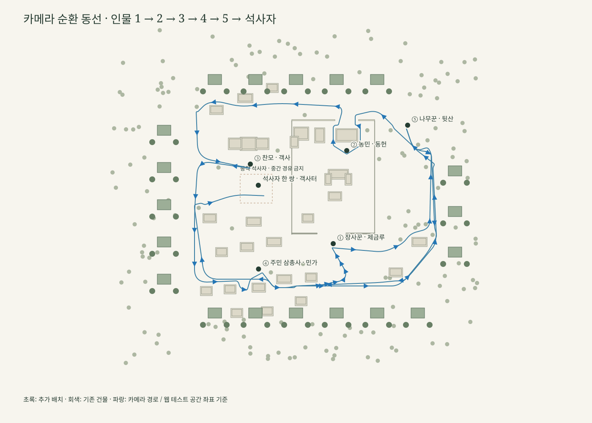
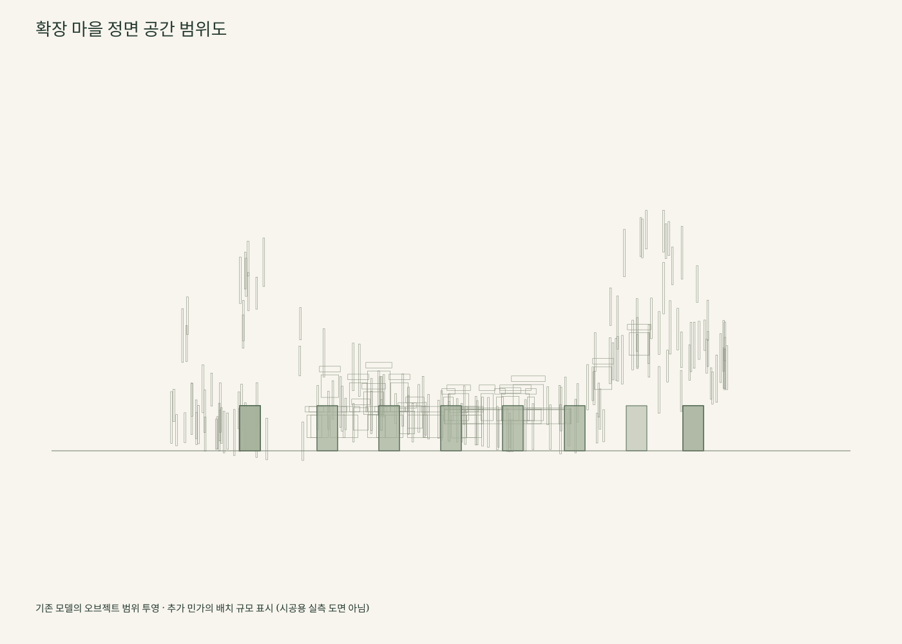
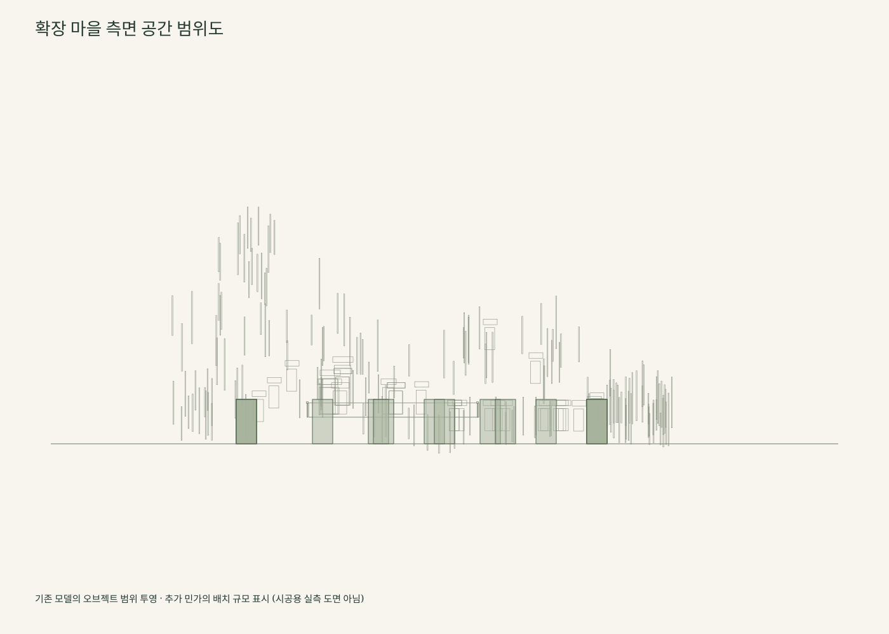
기존 Blender 원형 자료
전체 마을 · 풍경


공주목 · 객사 · 민가
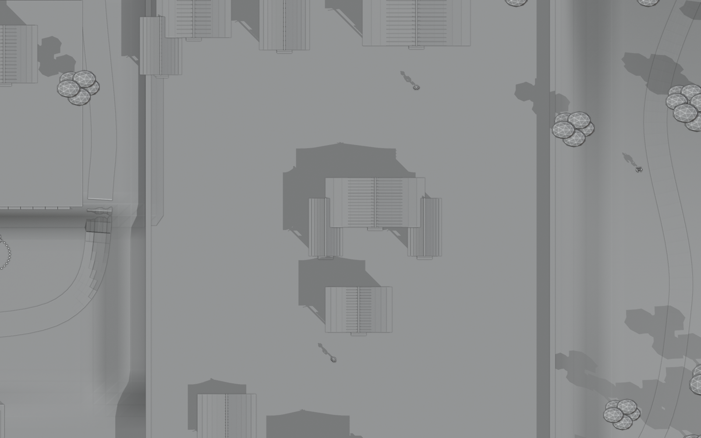

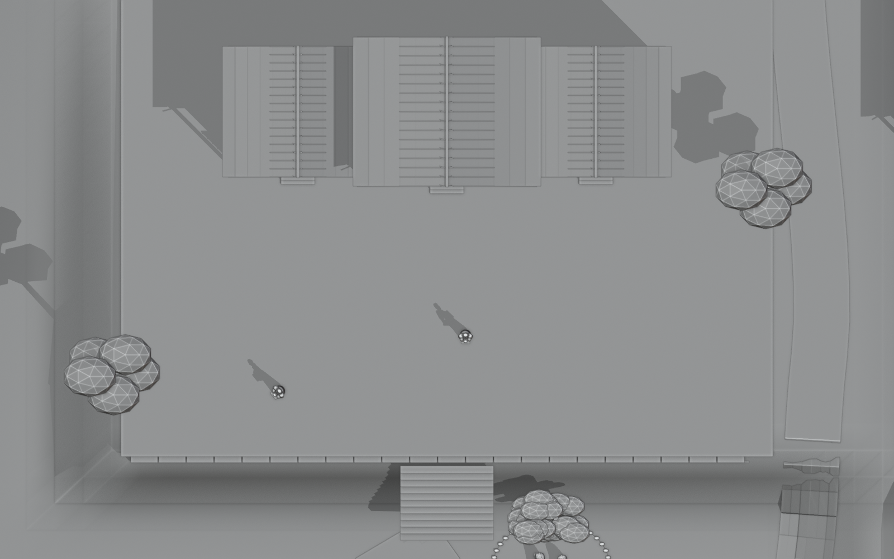

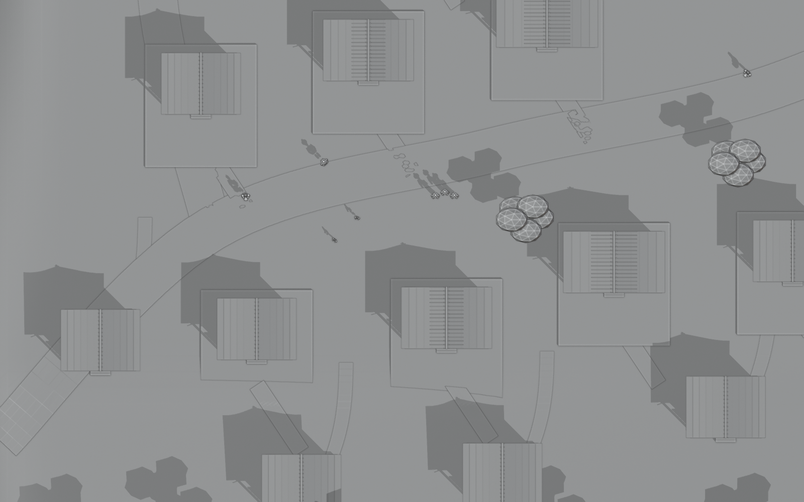

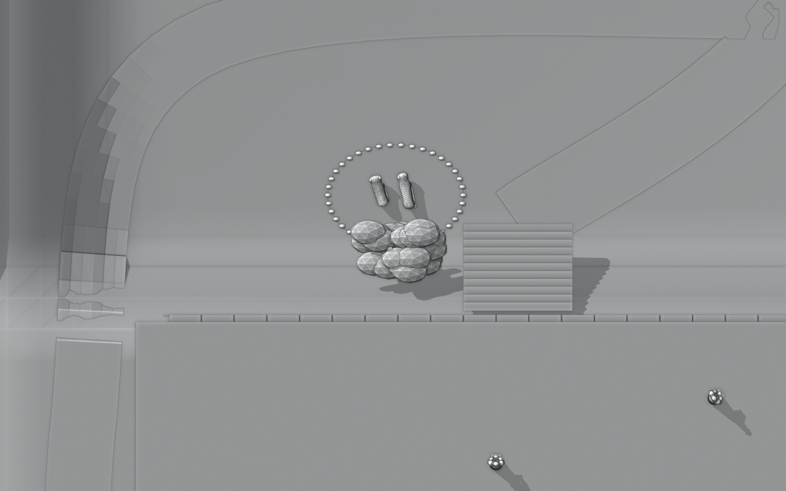

계절 · 시대 · 현재


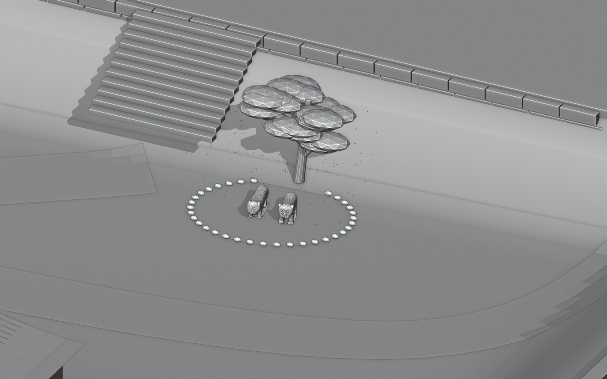

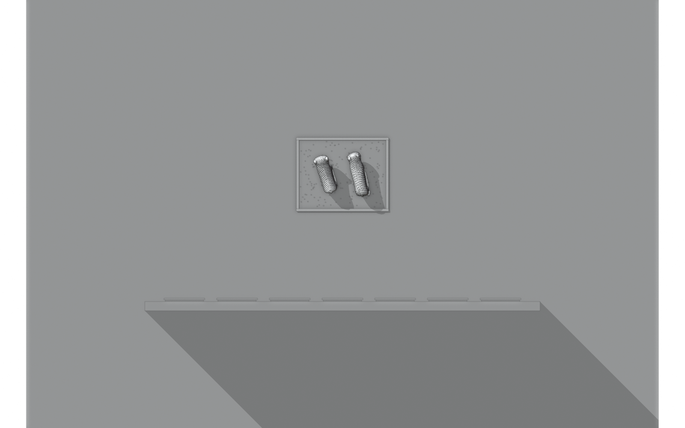

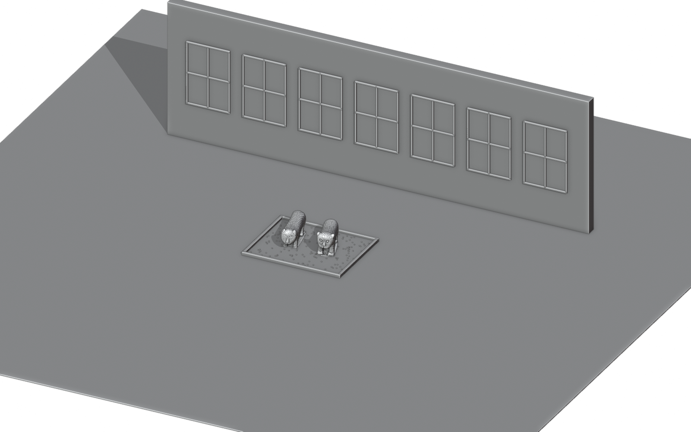

Blender 작업 화면
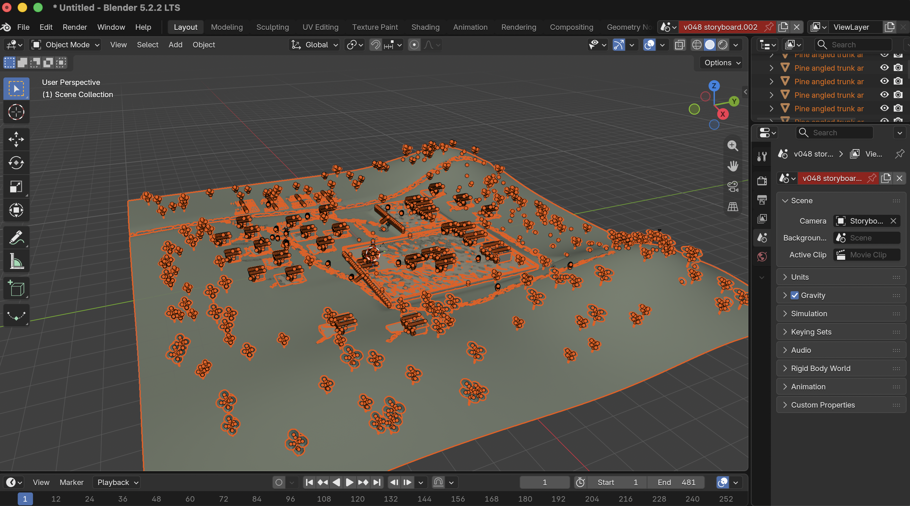